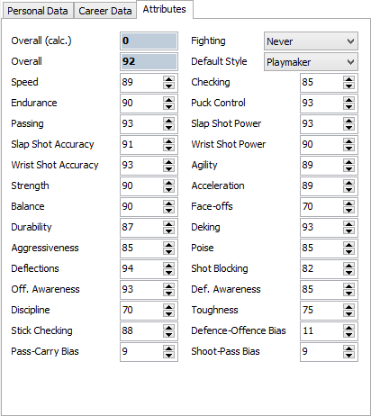
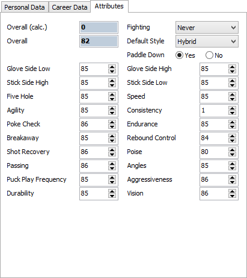
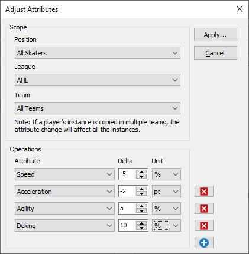

The attributes page displays the fields that affect player's in-game performance as well as simulated game stats.
 Skater Attributes |
 Goalie Attributes |
The attributes available in each version of NHL differ vastly. NHL 14 does not have the same attributes as NHL 09. Most of the attributes that can be edited correspond to the same ones that are available in the game, but there are also attributes that the game does not show and the attributes that exist in game but NHLView NG does not yet support.
Overall - The overall formula used by the game is quite complex and depends on a number of factors such as position and player style. NHLView NG does not currently know how to calculate the overalls. NHL 13+ store the overall value of a player in the roster file, while the previous versions of the game calculate it on the fly. For this reason, NHLView NG will always show 0 for overall when rosters from previous years are opened. There are two Overall values, calculated and current. Calculated value is the value that takes into account the modifications made to the attribute values. Since NHLView NG does not yet know the overall formula, this value is always 0. The value below the calculated overall is the actual overall stored in the roster. When you change attributes, NHLView NG is currently unable to correspondingly update the overall; however, when you load the roster and re-save it with the game, the changed overall is saved in the roster and will be shown by NHLView NG next time the roster is loaded.
Default Style - Much like the jersey number, the player's style may differ from one team to the other. Default Style determines the style that is applied to the player when he is a Free Agent and is signed to a team. To edit the style of the selected player instance, use the Line Editor. NHLView NG will also automatically apply the change in the default style to all the instances of the player that had the previous style. For example, if Evgeni Malkin is a Playmaker for Pittsburgh and All-Stars but is a Scorer for Russia, then changing his default style to Two-Way Forward will change his style for Pittsburgh and All-Stars but not for Russia.
Skater Bias Attributes - Bias attributes are hidden in the game but can be edited with NHLView NG. It is unknown whether they affect in-game A.I., but it is certain that they are used by the game to simulate player statistics in a season.
Goalie Paddle Down - The effect of this attribute is unknown
Bulk Attribute Modification
Rather than modifying individual attribute values, it's possible to apply bulk modification to up to 10 attributes. To do so, use "Database/Adjust Attributes..." command. This will show the following dialog:

Bulk Attribute Adjustment
In it's basic form, attribute adjustment consists of selecting one or more Attribute to modify, then specify the amount by which to change the current value. This Delta can be specified as an absolute number of points or as a percentage from the current value. To decrease the current value of the attribute, a negative delta value should be specified. If the resulting attribute value is outside the range of possible attribute values, then the minimum/maximum value will be used.
Moreover, it's necessary to choose the Scope of attribute adjustment. By default, the modifications will affect only the currently selected player. However, it is possible to use a broader range, by selecting for example All Skaters or specific positions. In addition, it is possible to target a specific League or a specific Team. The league/team selection is complimentary to the Position scope. So it is possible for example to apply bulk modifications to only defensemen in a specific league. Since attributes of skaters and goalies are different, it is not possible to do bulk modifications to both at the same time. There is also a maximum limit of 10 attributes per operation.